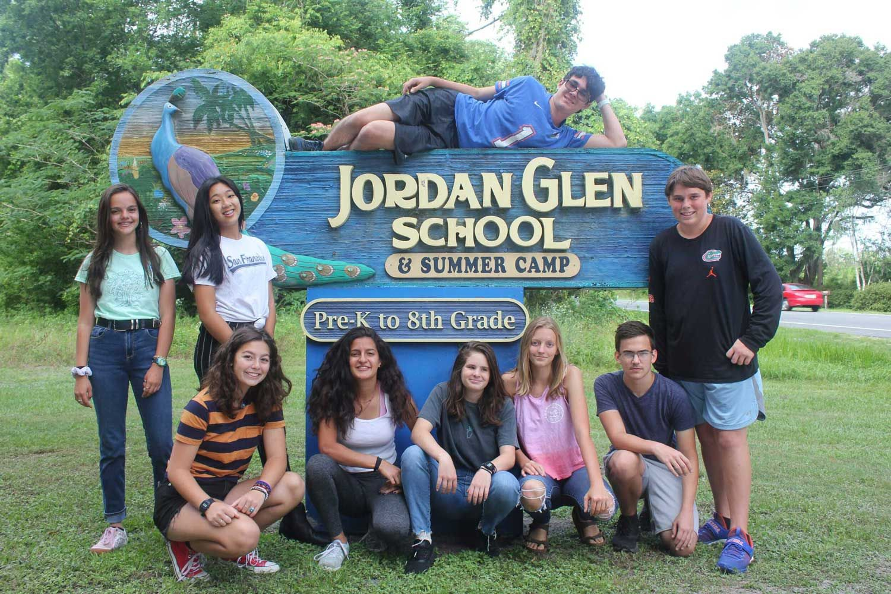
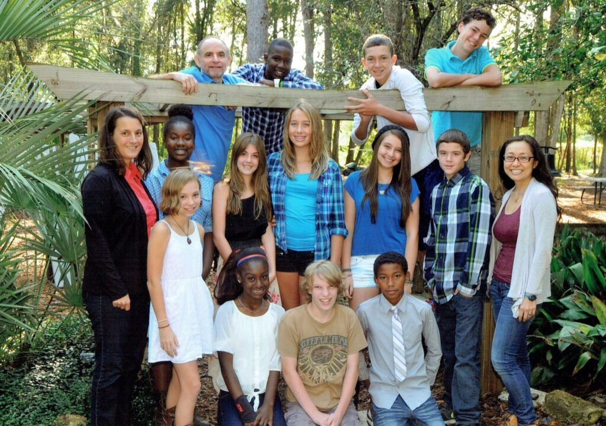
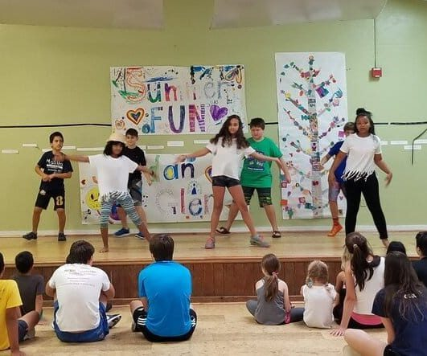

Archer, Florida · Since 1974
Enriching the lives of Gainesville children since 1974.
Jordan Glen School is a nonprofit school and summer camp in Archer, eight miles west of Gainesville, on 20 acres of field, orchard, and woods. Nature and the outdoors are primary resources for daily learning.
Tour requests, applications, and camp registration use Jordan Glen’s existing forms.

A unique environment
The woods are part of the school, not a break from it.
Jordan Glen’s own description: the campus is a safe, physically beautiful environment and an exceptional learning resource. The integration of the outdoor space into the atmosphere of the school is what sets it apart.
Teachers are known by first names. The day begins at 9:00 a.m. with Morning Meeting. The published student-to-teacher ratio is 15 to 1 on average.

Programs
One campus, from the youngest classes through 8th grade.
Classroom groupings can change with the year’s enrollment. Academics are grouped by age and ability, and the mixed-grade philosophy asks older and younger students to mentor one another.
PreK–1st grade
Outdoor time and play sit alongside a traditional academic curriculum, with the aim of a foundation that loves learning.
2nd–4th grades
Academic preparation for middle school, plus more chances to lead and to become thoughtful, well-rounded students.
5th–8th grades
Middle school uses a “work hard, play hard” approach. Graduates leave with tools for the next chapter.
“Jordan Glen made me the person I am today! A truly special school that focuses on creativity, fun, and personal responsibility.”
“Jordan Glen is a magical place. I continue to be amazed on a daily basis watching children develop a love of life and learning. I wish every child could experience JG for themselves.”
Campus
Field, orchard, woods, pool, and a pond you can see from above.
The school locates itself on twenty acres of playing fields, orchards, and woods, just east of Archer. Summer camp materials also name a swimming pool, tennis court, playground, activity rooms, an art deck, a kitchen, and a piano.
The satellite view shows the wooded property, the central clearing, buildings, a small pond, and the pool. Jordan Glen’s written pages do not describe the pond; it is visible in this aerial.

Summer camp 2026
June 8–July 17, for children entering grades K–8.
More than 50 summers. Campers swim daily when weather allows, choose afternoon electives, and eat outside when they can. Sibling discounts are offered, and spots are limited.

News
Recent letters from the school.
JG Winter 2025 Newsletter
The school shared Term One updates and linked a newsletter PDF.
JG Spring 2024 Newsletter
Term Three happenings, plus that term’s electives.
JG Fall 2023 Newsletter
Term Two notes, electives, and an invitation to the Thanksgiving Feast.
Come see the campus.
To schedule a tour, call (352) 495-2728 or send a message through the school’s information form. Applications and camp registration use the forms already on jordanglen.org.